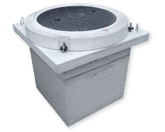
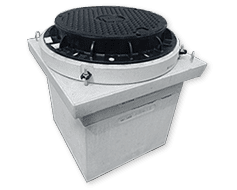
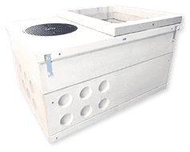
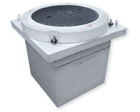
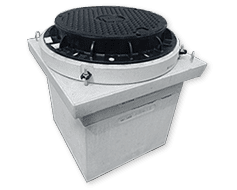
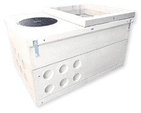
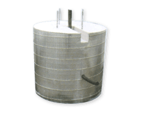
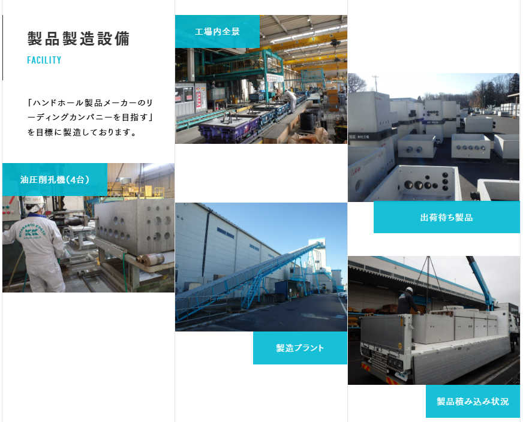
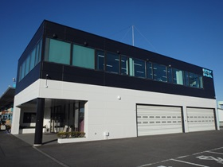

株式会社北関東工業
当社創設以来のチャレンジスピリッツ、それが「やるっきゃない精神」です。
個の目的意識が大きな「和」となり、組織としての大きな目標達成に向かっていくと当社では考えます。
事業内容
ハンドホールの製造販売
各種ハンドホールの製造販売を行っています。
1.KK-E型ハンドホール
ハンドホールで日本初受賞、good design award 2016年度受賞
国土交通省大臣官房官庁営繕部監修「公共建築工事標準仕様書」
（電気設備工事編）に準拠し設計しておりま すので、
国土交通省型ハンドホールと同等の強度を有しています。
官公庁への設置も可能で強度計算書もお出しできます
   
  
2.スパイラルポール基礎
従来、現場打で対応している照明灯用の基礎をプレキャスト化した基礎ブロック。
プレキャスト化する事により品質の安定化と工期短縮を実現。
照明の仕様により様々なサイズ及び形がある中で、各ニーズに応えるべく、
バリエーション豊かなラインナップを取り揃える。

設備
当社の強み
1北関東工業は、これまでハンドホール専門メーカーとして、品質マネジメントシステムに基づいた
高品質な製品の開発・製造・販売に邁進してまいりました。
これからもより安定した製品開発と生産性の向上を目指し、省エネやエコロジー対応等、
時代に即した製品開発にも使命感をもって取り組んでまいります。
２ハンドホールでJIS適合性認証を取得
認証番号 本社工場：TC 03 08 306 北上工場：TC 02 08 114
規格番号 JIS A 5372:2016(プレキャスト鉄筋コンクリート製品）
認証区分 Ⅱ類（基準B）
製品の種類 マンホール類
製品 分割形ハンドホール(H1-6,H1-9,H2-6,H2-9)
3. KK-E型ハンドホールでグッドデザイン賞を受賞
（「ISO取得」「導入企業数100社以上」など信頼性UPの数字が◎）
お問い合わせ
アクセス

「〒323-0115 栃木県下野市下坪山1847-3
TEL 0285-47-0313 FAX. 0285-47-0314